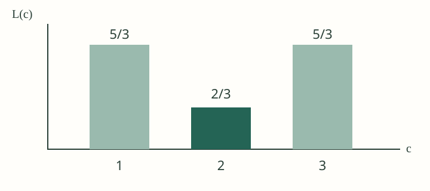

工程验收样本，不是完整课程笔记。只覆盖自编的三个观测值；没有考核权重、历年卷或官方解答，因此不能推断考试频率。
平方损失（Squared loss）衡量预测常数与观测值的偏差。对于三个等权观测值 1、2、3，选择一个实数 c，使平均平方损失最小。等权和平方这两个条件都不能遗漏。[source:S001|section Mean and squared error]
其中 c 是待选常数，分母 3 是样本数。独立求导得到 L′(c)=2c−4，二阶导数恒为 2，大于零，所以 c=2 是唯一的全局最小点；代回原式，损失为 2/3。

图中横轴是常数 c，纵轴是平均平方损失 L(c)。中间柱更低说明这三个候选中 c=2 更好；连续实数域上的唯一最小性则由上面的二阶导数证明，不能仅靠三个柱子证明。
| 条件 | 推导中作用 | 改变后的边界 |
|---|---|---|
| 等权观测 | 每项贡献相同 | 权重改变时应重新推导 |
| 平方损失 | 产生线性一阶导数 | 绝对损失不能套用这份求导 |
不能把这份证明原样用于绝对损失。这不是考试陷阱预测，而是由目标函数不同直接得到的适用边界。[source:S001|section Mean and squared error]
loss = sum((observation - candidate_constant) ** 2 for observation in [1, 2, 3]) / 3c=2。令 2c−4=0，且二阶导数为正；再代回原式核验损失为 2/3。回看推导。[source:S001|section Mean and squared error]
不能。目标函数改变，导数及其适用条件需要重新分析。回看适用条件。[source:S001|section Mean and squared error]
S001 · Original engineering fixture: mean and squared error。本项目自编，仅用于渲染与交互验收。